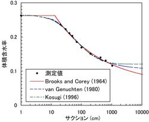
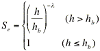
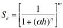
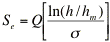
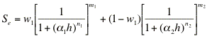
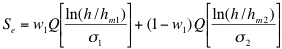
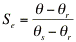
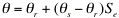

[ English | 日本語 ]
SWRC Fit - 土壌水分特性曲線の非線形回帰プログラム -
|
土壌水分特性のデータを、モデルによって近似し、土壌水分特性パラメータを決定することができるフリーソフトを公開しています。
このプログラムには、以下のような特徴があります。
- 複数の土壌水分特性モデルに対して、レーベンバーグ・マルカート法によるパラメータの決定ができる。
- パラメータの初期値や増分割合の設定を、プログラムが自動的に行うため、ユーザーはデータを入力してプログラムを実行するだけで良い。
- 数値計算言語 GNU Octave によって記述されている。Windows, Mac OS X, Linux, UNIX等、GNU Octaveが動作する様々なOSで動かすことができる。
- WebインターフェイスによりGNU Octaveをインストールすることなく簡便に実行できる。
|

土壌水分特性曲線
|
ダウンロード
zipファイルを展開してください。swrcfit がプログラム本体です。
最新バージョンは2015年6月7日にリリースされました。更新履歴を参照して下さい。
Webインターフェイス
Webバージョンです。「# Paste your data here」とあるところに水分特性のデータを入力してCalculateボタンを押すと、計算結果とグラフが表示されます。
モデル
| 略号 | 文献 | 式 |
| BC | Brooks and Corey (1964) | 
|
| VG | van Genuchten (1980) |  (m=1-1/n)
|
| LN | Kosugi (1996) | 
|
| DB | Durner (1994) | 
(mi=1-1/ni) |
| BL | Seki (2007) |  |
ここで、h はサクション、θは体積含水率、Seはにて定義される有効水分、すなわち、Q(x)は標準正規分布関数 Φ(x)(誤差関数とは異なる)の余関数 Q(x)=1-Φ(x)で、他のパラメータは土壌水分特性パラメータである。
文献
- Brooks, R.H., and A.T. Corey (1964): Hydraulic properties of porous media. Hydrol. Paper 3. Colorado State Univ., Fort Collins, CO, USA.
- Durner, W. (1994): Hydraulic conductivity estimation for soils with heterogeneous pore structure. Water Resour. Res., 30(2): 211-223.
- Kosugi, K. (1996): Lognormal distribution model for unsaturated soil hydraulic properties. Water Resour. Res. 32: 2697-2703.
- 関勝寿 (2007) 数値計算言語Octaveによる土壌水分特性曲線の非線形回帰プログラム. 土壌の物理性, 105:67-78. PDF
- Seki, K. (2007) SWRC fit - a nonlinear fitting program with a water retention curve for soils having unimodal and bimodal pore structure. Hydrol. Earth Syst. Sci. Discuss., 4: 407-437. doi:10.5194/hessd-4-407-2007
- van Genuchten, M. (1980): A closed-form equation for predicting the hydraulic conductivity of unsaturated soils. Soil Sci. Soc. Am. J. 44:892-898.
このソフトを使った研究例
SWRC Fit は、多くの研究で使われています。
このページのPURLは http://purl.org/net/octave/ です。(PURLとは?)

管理者: 関 勝寿
(ご意見・ご要望をお寄せ下さい)
This site is hosted by